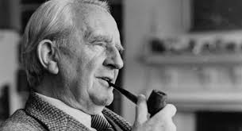

Autor

John Ronald Reuel Tolkien, conhecido internacionalmente por J. R. R. Tolkien
(Bloemfontein, 3 de janeiro de 1892 — Bournemouth, 2 de setembro
de 1973), foi um premiado escritor, professor universitário e filólogo britânico,
nascido na África, que recebeu o título de doutor em Letras e Filologia pela>
Universidade de Liège e Dublin, em 1954, e autor das obras como O Hobbit,
O Senhor dos Anéis e O Silmarillion. Em 28 de março de 1972, Tolkien foi nomeado
Comandante da Ordem do Império Britânico pela Rainha Elizabeth II.
Tolkien nasceu em Bloemfontein, na República do Estado Livre de Orange, na atual
África do Sul, e, aos três anos de idade, com a sua mãe e irmão, passou a viver na
Inglaterra, terra natal de seus pais. Desde pequeno fascinado pela linguística, fez
a licenciatura na faculdade de Letras em Exeter. Participou ativamente da Primeira
Guerra Mundial, e logo depois começou a escrever os primeiros rascunhos do que
se tornaria o seu "mundo secundário", complexo e cheio de vida, denominado Eä,
palco das suas mundialmente famosas obras como O Hobbit, O Senhor dos Anéis e
O Silmarillion, esta última, sua maior paixão, postumamente publicada, que é
considerada a sua principal obra, embora não a mais famosa.